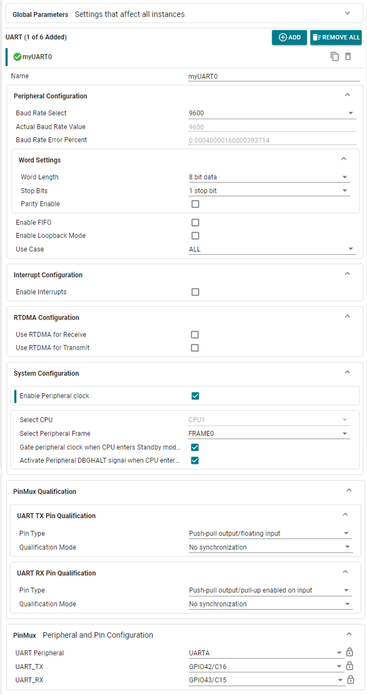
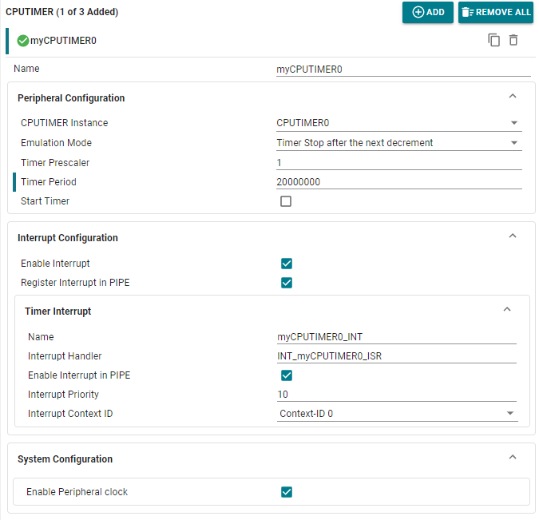
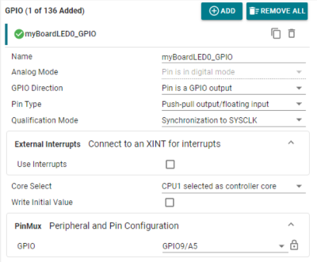
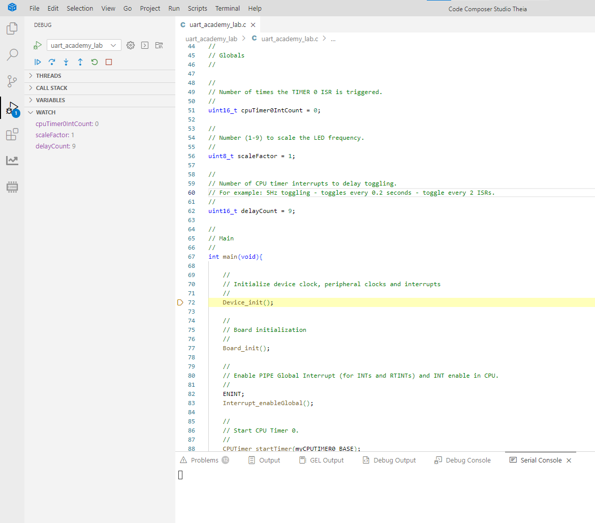
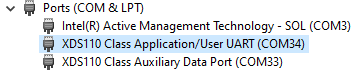
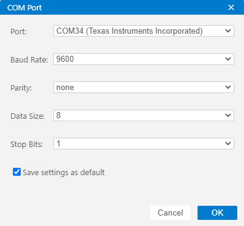
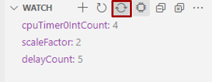
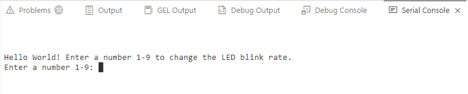
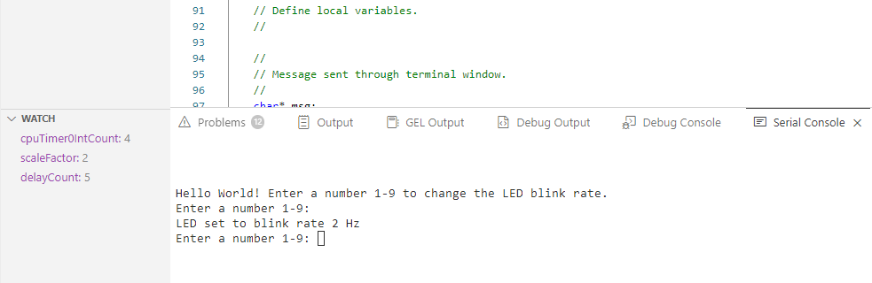

Universal Asynchronous Receiver/Transmitter (UART) Lab#
The objective of this lab is to become familiar with the on-board UART (Universal Asychronous Receiver Transmitter) by sending and receiving data between a C29 device and a computer. We will use the computer to change the frequency of the blinking LED and then the board will echo this value back to the computer. This will allow us to demonstrate both directions of communication. Additionally, Code Composer Studio’s terminal feature will be explored and used to interact with the device. The LED will blink at a rate of scaleFactor[Hz], with the scaleFactor being the integer 1-9 input into the UART terminal. This means the LED can blink at a frequency of 1Hz (default) - 9Hz in this example. As you increase the frequency, you should see the LED blink rate increase.
Solution#
The Academy lab modules provide step-by-step instructions for users to follow along and carry out; however, the completed software solutions are also available in the device’s SDK.
See your device’s specific SDK to obtain this lab’s software solution.
You can download your device’s SDK by going to the device’s product page on TI’s website and navigating to the ‘Design & Development’ and ‘Software Development’ tabs.
This specific lab’s solution can be found in: [Device_SDK_Install_Path]/examples/driverlib/single_core/uart.
Overview#
In this lab, we will learn to use the UART module of C2000 real-time Microcontrollers by using a TI controlSOM. This module will help you understand how C29x devices communicate with external devices or with each other over UART based serial communication. We will use the SysConfig GUI to configure the UART module for port configuration (baud-rate, word length, parity). It will also configure the CPU timer to control the rate of LED blinking.
Lab Setup#
Hardware Setup#
Required hardware for this lab:
ControlSOM with the supplied USB cable.
Oscilloscope (optional).
This lab exercise is intended for the F29H85x ControlSOM. Before continuing this lab, please be sure to reference the ControlSOM User Guide for hardware setup details.
Using the supplied USB cable, connect the USB Type-C connector into your C2000 board and the USB Standard Type-A connector into your computer’s USB port.
Please note that a docking station is recommended to successfully run this lab. If you are using the controlSOM docking station, an additional power supply is needed for the docking station. See the ControlSOM User Guide for more details.
Check the power status LEDs (LED1 and LED2) to confirm that the board is powered and provides a JTAG communication link between the device and CCS.
Set XDS110ISO-EVM Switch 2 to Position ON in order to route the UART signals to the UART-to-USB bridge and onto the COM port of your computer. Without this step, communication with the COM port will not be possible.
Software Setup#
Required software for this lab:
The device’s SDK
Your device’s software development kit (SDK) download can be found on the “Software Development” section of your device’s product page on TI’s website.
The Code Composer Studio (CCS) platform.
See the CCS User’s Guide for more information about this IDE.
Start a CCS Project#
Our first task is to import an empty project to our CCS workspace.
Open CCS and go to File → Import Project(s). A new window should appear.
Click the Browse button and select the
[MCU_SDK_[DEVICE]_Install_Path]/examples/driverlib/single_core/empty_projectsand click “Select Folder”.Note that the default Windows installation directory
[MCU_SDK_[DEVICE]_Install_Dir]isC:/ti/c2000/MCU_SDK_[DEVICE]_X_XX_XX_XX_XX.
Under Discovered Projects, you should now see the
empty_driverlib_project.

Click Finish to import and copy the
empty_driverlib_projectinto your CCS workspace.After the project has been imported, the project explorer window should look like below:

Rename the project:
Right-click on the project in the “Project Explorer” panel. Select Rename from the drop-down menu and rename the project to ‘uart_academy_lab’ or a name of your choosing.
Now click the Down Arrow located to the left of the imported project to expand it and select
empty_driverlib_project.c. Right-click on the file, and select Rename to rename the file to ‘uart_academy_lab.c’ or a name of your choosing.
Configure the UART#
The first task is to set up the UART peripheral with the following specifications:
Word Length of 8 bits
Stop Mode of 1
No Parity
FIFO enabled
Baud Rate of 9600 bps
In order to do this, open the file with the “.syscfg” extension within the project by double clicking it. You’ll see the SysConfig tool open within CCS. Add a UART module by clicking on the (+) sign next to it. Now, we can configure the settings to look like the below based on our configuration specifications. Configure the settings as described below (note that some configurations can be left as the default)
Under the Peripheral Configuration dropdown:
Enter 9600 into “Baud Rate Select” (default) to configure a baud rate of 9600 bits/second. Based on the SYSCLK and baud rate configured, the “Actual Baud Rate Value” and “Baud Rate Error Percent” are calculated by Sysconfig. If changing the baud rate or SYSCLK frequency, minimize this error percent value to avoid communication errors with the UART module.
Under the Word Settings dropdown:
Select “8 bit data” to transmit/receive 8 data bits in each UART frame (default)
Select “1 stop bit” to transmit/receive 1 stop bit in each UART frame (default)
Keep “Parity Enable” unchecked to send each data frame without a parity bit (default)
Keep the “Enable FIFO” box unchecked (default) since we will not need the FIFO for this example
Keep the “Enable Loopback Mode” box unchecked (default) since this example will be doing an echoback operation (C2000 UART RX -> C2000 UART TX) rather than a loopback operation (C2000 UART RX -> C2000 UART TX).
Under the PinMux dropdown:
Select UARTA for the “UART Peripheral” input
Select GPIO42/C16 for the UART_TX input
Select GPIO43/C15 for the UART_RX input
Note:
The UART instance and GPIOs may vary depending on the device or device family.
The device will be communicating with the computer via the bridge connection in the XDS110ISO-EVM board, so the UART pins don’t need to be wired by hand.
If using the F29H85x ControlSOM, then the correct GPIOs are ‘GPIO43’ (UARTA RX) and ‘GPIO42’ (UARTA TX). Note that these are the only UART GPIOs connected to the bridge on the XDS110ISO-EVM board, so they are the only GPIOs that can be configured to communicate with the COM port on your computer.
However, other UART GPIOs/instances can be configured for device-to-device UART communication.
Leave all other settings as the default selections.


You have now configured the UART module for this lab.
Configure the CPUTIMER#
The next part is setting up a CPUTIMER so that we can toggle an LED at a rate that we can change. Key configurations for the CPUTIMER include:
Use CPU Timer 0
Maximum period of 20000000
Prescaler of 1 (SYSCLK)
Period of 1 second
Enable/generate interrupt when the timer has stopped counting
Add an instance of “CPUTIMER” found under the “System” category for SysConfig. After clicking the ‘Add’ button within SysConfig, you’ll notice that the options are able to be edited.
To set up the correct timer period we can use the following below. In the equation, ‘freq’ is the device frequency in Hz, and ‘period’ is the period value you desire in microseconds
\(\text{timer period}=(\text{uint32_t})*((\frac{\text{freq}}{1000000})*\text{period})\)
For example, if the device frequency is 200MHz and desired period is to interrupt every 0.1 seconds:
\(\text{period}=(\text{uint32_t})*((\frac{200E6}{1000000})*100000)=200000000\)
Configure the settings as described below (note that some configurations can be left as the default)
Under the Peripheral Configuration dropdown:
Select “CPUTIMER0” to use the CPU Timer 0 instance (default)
Select Timer Stop after the next decrement for “Emulation Mode” (default) so that when the CPU is paused at software a breakpoint, the timer will also pause after the next decrement of the TIMH:TIM register field. This will allow us to debug by placing breakpoints in the application code without altering the functionality of the lab.
Enter 1 for the “Timer Prescaler” value since we don’t need to divide down the SYSCLK frequency for the CPU timer frequency we are configuring.
Enter 20,000,000 for the “Timer Period” since this is the period value we previously calculated that can be used for a CPU timer frequency of 10 Hz (every 0.1 seconds).
Keep the “Start Timer” option unchecked (default) since we will do this in the main code after all configurations are complete.
Under the Interrupt Configuration dropdown:
Check “Enable Interrupt” so that the CPU timer 0 interrupt is enabled at the peripheral level
Check the “Register Interrupt in PIPE” checkbox so that we can setup a interrupt service routine (ISR) handler inside the main application code to execute every 0.1 seconds.
Under the Timer Interrupt dropdown:
(Optionally) edit the “Name” field to change the PIPE interrupt name. We use myCPUTIMER0 (default). This will be defined in the Sysconfig generated board.h file and correlates to the CPU Timer 0 interrupt in the PIPE module.
(Optionally) edit the “Interrupt Handler” field to change the name of the ISR handler. We use INT_myCPUTIMER0_ISR. This will need to match the name used to define the ISR in the application code in later steps.
Keep “Enable Interrupt in PIPE” checked (default) to enable the CPU timer 0 interrupt at the PIPE level
Enter 255 for “Interrupt Priority” (default) to configure the CPU timer 0 interrupt as low priority. In this lab there are no other interrupts used, so this value doesn’t have any effect.
Select “Context-ID 0” for “Interrupt Context ID” (default)
Leave all other settings as the default selections. The configuration for Timer 0 should look like the below image.


You have now configured the timer for this lab.
Configure the GPIO#
We need to setup a GPIO as an LED whose blink rate will change depending on a value typed by the user. Add an instance of “GPIO” found under the “System” category for SysConfig. After clicking the ‘Add’ button within SysConfig, you’ll notice that the options are able to be edited.
Configure the settings as described below (note that some configurations can be left as the default)
(Optionally) edit the name of the Sysconfig GPIO instance. We use myBoardLED0_GPIO. This will need to match the name of the define used to toggle the LED inside the CPU timer interrupt ISR in later steps.
Select “Pin is a GPIO output” from the “GPIO Direction” options to configure the GPIO routed to the on board LED as an output.
Select “Push-pull output/floating input” from the “Pin Type” options (default).
Select “Sychronization to SYSCLK” from the “Qualification Mode” options (default).
Under the PinMux dropdown:
Select GPIO9/A5 for the GPIO used
Note:
The GPIO used for the controlSOM LEDs may vary depending on the device or device family.
If using the F29H85x ControlSOM, then the GPIOs connected to user LEDs - LED3 and LED4 on the controlSOM are GPIO23 and GPIO9 respectively. For this example, we configure GPIO9 in order to use LED4.


Program Setup#
Now that we have set up the UART, CPU Timer, and GPIO modules within SysConfig, we can move on to actually writing the application code for the intent of this lab.
Define Global Macros and Variables#
In our main (.c) file you’ll notice that board.h is called. This is the header
file that is being generated by SysConfig. The driverlib.h and device.h header
files are included inside the board.h file by default, since these define the board specific
functions and IPs.
//
// Included Files
#include "board.h"
We need to define three global variables, cpuTimer0IntCount scaleFactor and delayCount. These
three variables will allow us to change the LED blink rate and control
when the LED is toggled. Insert the following code after the board.h include.
//
// Globals
//
//
// Number of times the TIMER 0 ISR is triggered.
//
uint16_t cpuTimer0IntCount = 0;
//
// Number (1-9) to scale the LED frequency.
//
uint8_t scaleFactor = 1;
//
// Number of CPU timer interrupts to delay toggling.
// For example: 5Hz toggling - toggles every 0.2 seconds - toggle every 2 ISRs.
//
uint16_t delayCount = 9;
Define main()#
Next, we will populate main() as shown below.
Copy the below code into your .c after your “Globals” section.
Device_init()must be called to initialize the platform.Board_init()must be called to apply SysConfig-generated settings and code.Since interrupts are used in this example, we must enable interrupts on a global level.
We need to start the CPU timer 0 counting after all code to initialize the UART, CPU timer, and LED has been executed.
//
// Main
//
int main(void){
//
// Initialize device clock, peripheral clocks and interrupts
//
Device_init();
//
// Board initialization
//
Board_init();
//
// Enable PIPE Global Interrupt (for INTs and RTINTs) and INT enable in CPU.
//
ENINT;
Interrupt_enableGlobal();
//
// Start CPU Timer 0.
//
CPUTimer_startTimer(myCPUTIMER0_BASE);
Now we will declare three variables within our main() function:
msg- used to store message before transmitting it to the terminalreceivedChar- used to store a character read in from the terminalrxStatus- used to store the status of the UART receive status register
Finally, we send our starting message to the COM port of the connected
computer. Note that we use the myUART0_BASE define from the board.h file that Sysconfig generated, which correlates to UARTA’s base address.
//
// Define local variables.
//
//
// Message sent through terminal window.
//
char* msg;
//
// Variable used to track input from the terminal window.
//
char receivedChar;
//
// Variable used to store the status of the UART RX status register.
//
uint16_t rxStatus = 0U;
//
// Send starting message.
//
msg = "\r\n\n\nHello World! Enter a number 1-9 to change the LED blink rate.\0";
int i;
for(i = 0; i < 66; i++){
UART_writeChar(myUART0_BASE, (uint8_t)msg[i]);
}
The last part of our main function is a loop where we prompt the user
to enter a number 0-9, read in the number, calculate the delayCount
value based on the number, and then echo the number back to
the user. We use the blocking function UART_readChar() to
pause the code from continuing until a number is inputted. Notice how
our global variables scaleFactor and delayCount are set every time we read in a character.
The delayCount variable is used in our INT_myCPUTIMER0_ISR ISR and allows us to change the
frequency of the LED - myBoardLED0_GPIO.
In the event of a receive error on the UART RX line, we will stop the code execution to avoid unexpected behavior.
//
// Loop forever echoing data through the UART.
//
while(1)
{
msg = "\r\nEnter a number 1-9: \0";
for(i = 0; i < 23; i++){
UART_writeChar(myUART0_BASE, (uint8_t)msg[i]);
}
//
// Read a character from the FIFO.
//
receivedChar = UART_readChar(myUART0_BASE);
//
// Convert the received character into an integer.
//
scaleFactor = receivedChar - '0';
//
// Amount of timer 0 ISR's to skip before toggling the LED.
//
delayCount = (1.0 / (float)scaleFactor) / 0.1;
rxStatus = UART_getRxError(myUART0_BASE);
if((rxStatus & UART_RSR_ALL_M) != 0)
{
//
// If Execution stops here there an error.
// Analyze the rxStatus value.
//
ESTOP0;
}
//
// Echo back the received character.
//
msg = "\r\nLED set to blink rate \0";
for(i = 0; i < 25; i++){
UART_writeChar(myUART0_BASE, (uint8_t)msg[i]);
}
UART_writeChar(myUART0_BASE, receivedChar);
msg = " Hz";
for(i = 0; i < 3; i++){
UART_writeChar(myUART0_BASE, (uint8_t)msg[i]);
}
}
}
//
//end of main
//
Set Up the CPUTIMER ISR#
For the CPU Timer interrupt service routine (ISR) we want to define when to change the LED to achieve different blink rates based on the delayCount variable. We will pass in the scaleFactor through the terminal (which correlates to the LED blink rate in Hz)
and update delayCount to the necessary value to correctly change the rate at which the LED blinks.
For example, if the character ‘2’ is entered into the serial terminal, the application will update the LED to toggle at a frequency of 2 Hz (every 0.5 seconds).
To do this, we will set the delayCount to 5 so that the toggle will happen every 5 CPU timer ISRs.
The ISR below is entered every time the timer decrements to zero (after a full period). In this
case we setup the timer to interrupt every 0.1 seconds. The code below is adding one to cpuTimer0IntCount
every time the ISR is entered. Once this value is greater than or equal to delayCount the LED will toggle
its output state. Thus,
\(\text{delayCount}=(\frac{\text{1.0}}{\text{(float)scaleFactor}}) / \text{timer period})\)
Copy the following code into your source .c file:
//
// ISR for CPUTIMER0 to blink the LED based on delayCount.
// Interrupts every 0.1 seconds.
//
void INT_myCPUTIMER0_ISR(void)
{
cpuTimer0IntCount++;
if (cpuTimer0IntCount >= delayCount){
cpuTimer0IntCount = 0;
GPIO_togglePin(myBoardLED0_GPIO);
}
}
This concludes the coding portion of this lab.
Build the Project#
With the configurations and code complete, we can ‘Build’ the project to check for any errors. Once the project builds without errors, we will connect to the device, load the program to the device, and run it within a debug session.
Right-click on your project and hover over the Build Configurations button until another panel pops up. Select the CPU1_RAM build configuration.
With the RAM configuration selected, the project will be loaded to the RAM memory of the device.
Right-click on your project again and select Build Project(s) to build your program. Fix any compilation errors.
Run the Project#
Now we will start a debug session.
Ensure that the USB cable from your board is connected to your computer.
Right-click on your project and select Debug Project.
If prompted, check that only CPU1 is selected to load the program to.
This action should re-build your project, connect to the debugger, and load the program to the device.
The DEBUG window should populate and the debugger should have paused at the beginning of your
main().


Double check your board’s documentation (information guides and schematics) to be sure the switches are set to allow UART communication with your computer.
Open a terminal in CCS by clicking
ViewthenConsolethenSerial Console. A terminal window should pop open.If you do not know what COM Serial Port the device is connected to you will need to determine this. On Windows 10, this can most easily be done by searching for Device Manager in your Windows search bar and then scrolling down to Ports. Look for “User UART (COMX)” or “USB Serial Port (COMX)” where X represents a number. This is the COM number you will use in CCS. For example in the below image, the identified port would be COM Serial Port 34. Remember your COM Serial Port for the next step.


Create a new terminal by clicking Connect/Disconnect COM Port in the top right corner of the Terminal Window, and set the terminal to the following settings. Additionally, input the COM Serial Port associated with the device.


Scroll to the global variable
scaleFactorand highlight it. Then right-click and select Add Watch Expression… Repeat this step for the global variablesdelayCountandcpuTimer0IntCount.In the Watch Expression Window, click on the
Continuous Refreshbutton so that the visual is updated as the code is running.


Now we will continue the debug session and the
main()by clicking the blue Continue button in the upper left corner.Note that there are several other buttons that can be used to help debug your project by stepping through your program line by line. Feel free to explore them here, or see the CCS User’s Guide for more details on CCS 20 capabilities.
Validate the Project#
Now that we have begun a debug session, we can take steps to verify the project is functioning as expected.
A message should appear in the terminal and the user LED on your board should be blinking at approximately 1 Hz.


Enter a number from 0 to 9 and watch as the values for
scaleFactoranddelayCountchange in the Expressions Window. Also watch as the frequency of the LED on the device changes with the delayCount. Try this again with a different number. The higher the number 0-9 inputed into the Console, the faster the LED will blink.


Terminate the Debug Session and Close the Project#
With the project developed and validated, we can close this debug session.
Click the red Stop button at the top of your
DEBUGwindow to terminate the active debug session and disconnect the debuggerYou can return to the
Project Explorerwindow by clicking on the corresponding button at the top of the panel on the left.
This concludes the lab exercise.
Lab Summary#
In accomplishing this lab, you should have:
Learned how and why the UART can be used to communicate with the COM port on your computer.
Utilized the CCS environvment and the SysConfig GUI to configure the UART peripheral.
Gained familiarity with the basic functions of the CPU Timer module and how they can interact within a system.
Full Solution#
Recall that the completed software solution is available as well. Please refer to the top of this page to review the location of this lab’s software solution.